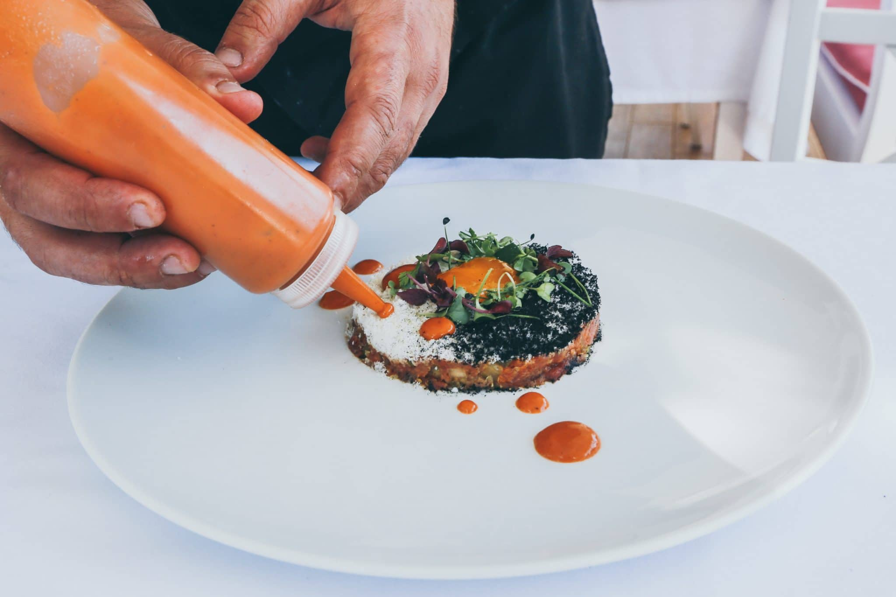

Culinary, why is culinary important? well it's a great learning tool for learning how to cook simple things like eggs or tacos and without knowing how to cook you cant live.
There would obviously be alot of cooking, you can expect to make sweet treats like pie or cookies, but you will also be making stuff like tamales, eggs, or pancakes.
my name is madison and im in 7th i chose culinary because im hungry.
Provide contact details for further inquiries. Include an email address, phone number, and possibly a form for visitors to submit questions.